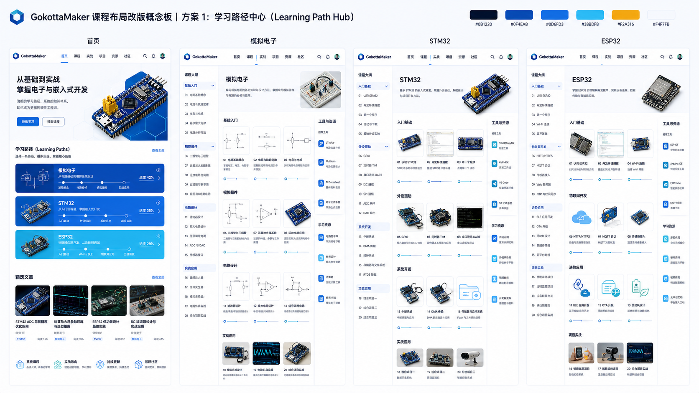
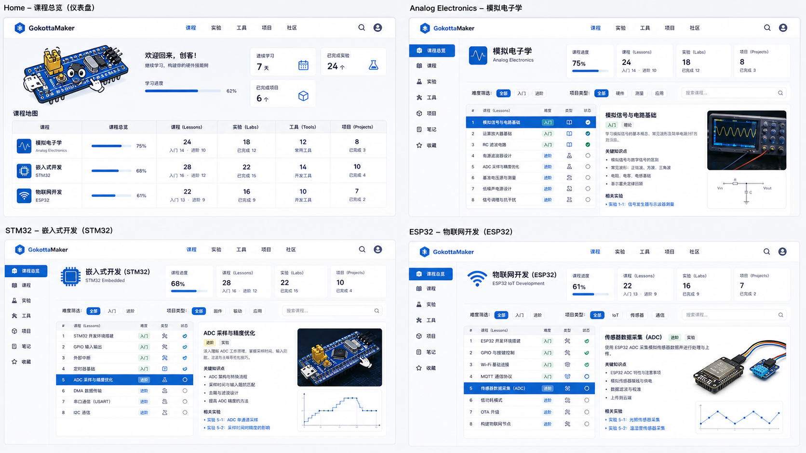
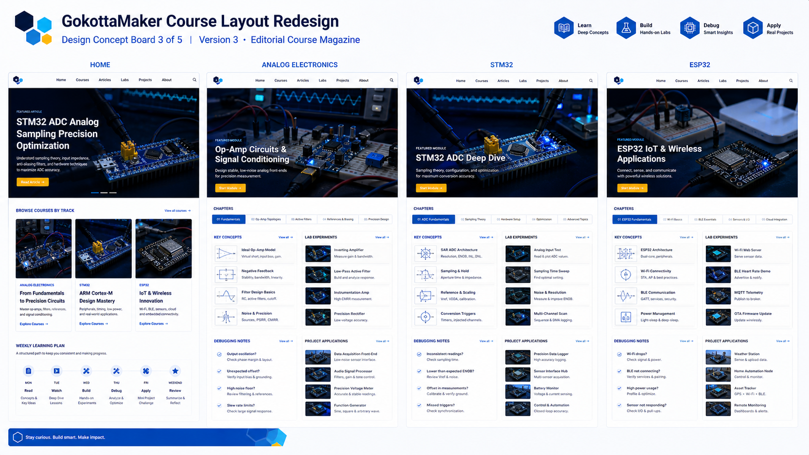
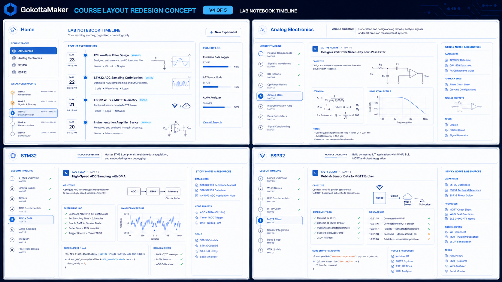
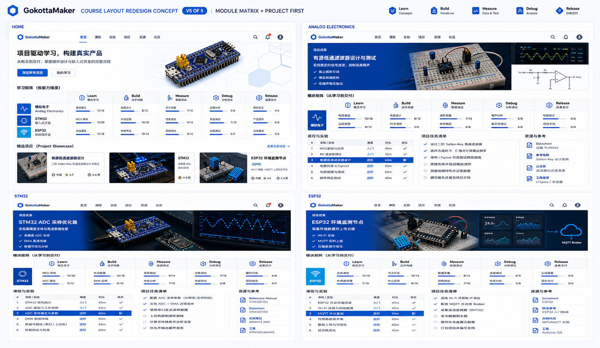

课程布局设计 5 选 1
每张设计图都包含首页、模拟电子页、STM32 页和 ESP32 页的布局方向。视觉语言沿用 GokottaMaker 15 号 LOGO、白天 05 主题和蓝色模块化体系。




每张设计图都包含首页、模拟电子页、STM32 页和 ESP32 页的布局方向。视觉语言沿用 GokottaMaker 15 号 LOGO、白天 05 主题和蓝色模块化体系。




